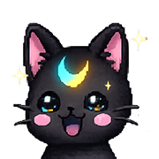

Discover how your PIO interacts with the lunar world and rewards you in crypto style!
Lunar Treats are magical interactions on the PIO Dashboard that let PIO collect cosmic rewards while reflecting the crypto ecosystem’s pulse. Each treat you send affects PIO’s mood, health, and the environment, creating a unique, interactive experience.
When you send a Lunar Treat, PIO responds dynamically:
Engage with PIO in real-time:
Lunar Treats combine fun, interactivity, and blockchain transparency. They turn the PIO dashboard into a living ecosystem where users are rewarded for participation, while visually tracking PIO’s mood, health, and performance. It’s the bridge between crypto data and playful engagement.